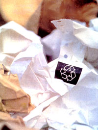
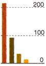
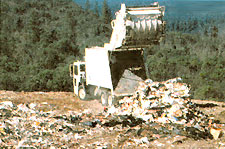
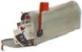
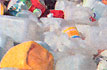
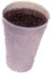

America's garbage dilemma comes around.
To understand the national obsession with saving our garbage we have only to look to the pages of the Seguin Gazette, a newspaper in South Texas. "Nothing is junk - save all scrap metal so it can be recycled," a reporter urges. "In multicar families use only one car ...and take up walking. [Do] your grocery shopping twice a week instead of every day, and if you live close to the market area walk and take your own basket." The story would read like a how-to brochure on environmentally sustainable living in the 21st century - if it weren't an announcement for the War Effort, circa 1942.
During World War II the fact that saving empty toothpaste tubes would keep the country's water and air clean wasn't of imminent concern. Recycling for the war was simple: Save now, have a better world to live in later. Sixty years later, has the message changed so much?
It's no secret that the United States is the most wasteful country on the planet. We dispose of 210 million tons of municipal waste every year, and the yearly costs of that disposal is just shy of $45 billion. Combine residential and business garbage with the truckloads of industrial waste produced in the U.S. and we have an annual pile of trash weighing 12 billion tons. Not surprisingly, what we do with our detritus has become a war of its own.
America's most recent wake-up call to the mess it was mak ing came in 1987, when a trash barge called the Mobro 4000 motored up and down the Eastern seaboard looking for a landfill in which to dump 3,200 tons of New York State's garbage. During thousands of miles of fruitless wandering (the Mobro eventually returned to port, still fully loaded), trash became a headline attraction in newspapers and television stations all over the country.
While waste was news, each story prompted more and more people to question the ethics behind throwing away so much at one time. In 1988, the Environmental Protection Agency (EPA) took the issue seriously enough to recommend that 25% of municipal trash be recycled by the end of a five-year program.
Twelve years of good effort, endless debates and considerable expense have actually made a difference. As of 1995 27% of the country's waste was recycled (compared to 6.3% in 1960), and projected numbers for this year report Americans reusing 30% to 35% with recovery rates for paper exceeding 45%.
Nonetheless, what does recycling do for us on a day-to-day basis? It certainly keeps us busy. We set up elaborate sorting systems in our homes - with glass in one bin and paper in the next, rinsing here and bundling there upon penalty of fines or worse: missing the pickup date! And what about the fact that recycling itself is a dirty business, with loud collection trucks plying the predawn streets? It's expensive, as is normal waste disposal, and in increasingly mandatory fashion our taxes are used to pay for an industry that struggles to turn a profit. Is recycling worth it?
Dr. Alan Hershkowitz, director of the National Resources Defense Council, thinks it is. "Everything costs money," he cautions, "including incinerators and landfills." The difference, he explains, is that recycling is designed to ease the impact we have on our environments and alleviate the burden our waste has on our communities. "So yes," Hershkowitz says, "it is worth it."
Since tax money is at the root of any waste solution, the question remains: How can we use the money to deal with our waste most effectively, decrease risks to human health, and foster a healthy environment to live in? It seems that, compared to landfilling, recycling is the economic and environmental favorite by a long shot.
Americans receive almost 4 million tons of junk mail a year - 44% is never opened. Every day, U.S. businesses generate enough paper to circle the earth 20 times. • In 1960, Americans disposed of 2.7 pounds of waste per person per day. By 1990, the number had risen to 4.3 pounds per person per day. • Every ton of paper recycled saves approximately 17 trees.
If done right, landfills can be a viable disposal option. If done wrong, they can be an environmental and economic disaster.
The main problem with landfills is that they are complicated structures that are difficult to maintain. Of particular concern is the wastewater created inside landfills as leachate. In order to keep the toxic material from leaking into the local drinking water, these football stadium-sized holes require a combination of liners made from clay, high-density polyethylene (HDPE) plastic or composite membranes. But according to the Environmental Research Foundation in Annapolis, Maryland, clay will dry and crack over time, HDPE will degrade with household chemicals, and composite liners made from clay and plastic will leak somewhere between 0.2 and 10 gallons a day after ten years. Even with complex leachate collection plumbing built into landfills, none of these solutions is 100% foolproof (collection pipes tend to clog and back up).
"The EPA technicians that currently oversee landfill design and regulation have said that their own engineering standards would not last," warns Will Ferretti, executive director of the National Recycling Coalition. "They're saying that they could break down in a 30-year time frame. It's clearly a concern and we have asked the EPA to revisit their regulations in that light."
To be fair, however, recycling doesn't clear every environmental hurdle either. Products remade from recycled waste such as paper and plastic go through a chemical process. In the case of newsprint, there are a dozen or so supposedly nonhazardous chemicals used in the remanufacturing process, including a water/hydrogen peroxide solution to remove ink from the used paper. Paper recycling also uses thousands of gallons of water.
Compared to making paper from virgin materials, however, recycling is clearly more responsible to the environment. In addition to the hundreds of highly toxic chemicals used in papermaking such as chlorine, dioxin and furan, consider what it takes to harvest a forest, build logging roads, and cut and haul trees. 'The paper recycling industry alone saves 17 trees for every ton of paper it keeps out of the landfill. In 1996 America recovered 42.3 million tons of paper, saving more than 719 million trees.
The plastic manufacturing industry provides an even more compelling case for re-use. According to Hershkowitz, the production of plastics from crude petroleum causes "some of the most substantial public health threats" of any manufacturing process. Indeed, in 1994 U.S. plastic production was responsible for 111 million pounds of toxic air emissions and 12 million pounds of ozone-depleting chemicals.
"You have to ask which activity leaves a smaller footprint on the environment," says Ferretti when comparing recycling to landfilling. "Recycling relies on industrial activity to function, and industrial activity, by nature, has byproducts that can affect the environment. But from a life cycle standpoint, recycling is much more preferable [to landfills] because it has the least impact."
Consequently, the amount of landfills in the U.S. has decreased from 8,000 in 1988 to just over 3,000 in 1996.
Americans throw away 2.5 million plastic bottles every hour.
Five recycled soft drink bottles will make enough fiberfill for a man's ski jacket. • 1,050 recycled milk jugs can be made into a six-foot park bench. • The United States makes enough plastic film each year to shrinkwrap the state of Texas. • If only 10% of Americans bought products with less plastic packaging only 10% of the time, approximately 144 million pounds of plastic could be eliminated from our landfills.
The "reuse and recycle" solution is not a new idea; it has, however, long been recognized as the most economically savvy one. Corporations and big industry such as Ford Motor Co., Herman Miller Furniture and Interface Carpets have been doing it for years because they save millions of dollars by cutting back on production costs. If the numbers don't prove recycling's worth, then common sense does.
"Certainly there is a segment of the population that believes that they have a God-given right to just use stuff up and throw it away," offers Ferretti. "But I don't think that segment of the population will always exist."
The statistics overwhelmingly support his prediction. The most recent EPA statistics (1997) reported that curbside pickup was available in over 49 states and 8,000 cities (Hawaii has since joined the team), and the National Recycling Coalition has estimated that around 84% of the population now has access to a recycling facility. As a result, the amount of municipal waste that has been recycled in the last decade has nearly doubled. By all accounts - public opinion polls and government studies included - people seem to want to recycle.
Of course, they also have to recycle. Fines and penalties for ignoring recycling laws are stiff, and this Big Brother finger-wagging is part of what prompted John Tierney, a NewYork Times reporter, to write his scathing rebuttal of the whole philosophy in 1996. Entitled "Recycling is Garbage," Tierney's article asserts that the resources, labor and sum personal time involved in recycling far outweigh any environmental or economic benefit. He further suggests that we not only have plenty of landfill space, but that landfills are an economic boon to the communities surrounding them. Tierney's engaging style was an instant hit among antirecycling political activists, but his often curious interpretation of facts left many scientists puzzled.
"Nothing is perfectly efficient," says Hershkowitz, "and no one I know of is seriously suggesting 100% recovery for recycling. Still, the main roadblock to increased levels of recycling is the absence of a commitment to this issue by indus tries that have many economic incentives not to recycle or use recycled materials."
Which brings us to a problem in the recycling industry: consumer support. Widely considered the weakest link in the recycling loop, recycled product sales are not what they should be - either because recycled products are more expensive or because they're unavailable. For that reason, the recycling industry isn't getting the financial support it needs to compete with the federally subsidized incentives to which Hershkowitz refers. Most people simply don't realize that they have the option to buy recycled.
Styrofoam is nonrecyclable. Each year Americans throw away 25 billion styrofoam cups. Five hundred years from now, the foam coffee cup you used this morning will be sitting in a landfill. • If all morning newspapers read around the country were recycled, 41,000 trees would be saved daily and 6 million tons of waste would never end up in landfills. (Sources: The EPA; ecology-action.org ; Institute of Scrap Recycling Industries; The Green Consumer, 1990)
"Aluminum, steel and glass are under our noses, and they're not marked like paper usually is," explains George Rutherford of America Recycles Day. "But aluminum, steel and glass have a 30% to 40% recycled content. Plastic doesn't. It's by and large a virgin product. Also, cars are one of the most widely recycled products we have."
Nevertheless, the enormous enthusiasm for recycling programs suggests that there are plenty of reasons to recycle other than being able to buy more stuff, remanufactured or not.
"Recycling is one of those few activities that [allows us] to make a direct connection between our behaviors and some kind of contribution to a quality of life that is hard to find out there," explains Ferretti. "Maybe altruistic is the right word, but I think there's something more innate and more satisfying that is occurring. I would argue that the quality of life both now and for your children and grandchildren is enhanced by that rather modest and mundane action of separating out some portion of our waste and putting it out at the curb for recycling."
While human nature is oftentimes up for speculation, the fact that recycling is the best solution for waste disposal isn't. The evidence and the desire have never been more telling.
|
 Trash Leaders (in millions of tons) ? United States ? Japan ? UK ? Canada |
 |
 |
|
 |
 |
|
|
 |
|
|